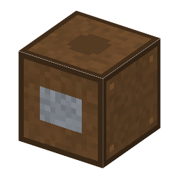

Dry Cell Holder・ブロック・Power
本当の歴史：[4-28] 乾電池（1896年）

①子ども 乾電池を入れると電気が出る箱。
②学生 板材＋銅で作る。乾電池1本で 8 W・2分、尽きたら次の1本を使う。銅ケーブルで機械につなぐ。直流で、回らないので交流発電機・ダイナモは積めない。
③大人 銅の板（接点）で乾電池のプラス（炭素棒）とマイナス（亜鉛の缶）をはさむ。
④ガチ 懐中電灯（1899年ごろ）は、乾電池が持ち運べるようになって生まれた。
（このアイテムを使うレシピは無い）